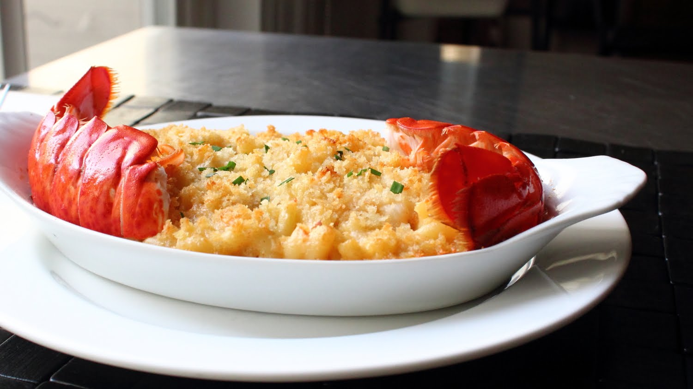

World's Famous Lobster Mac n Cheese

Lobster Mac n Cheese
Ingredients
- 1 Lobster
- a pound of shrimp
- 2 tablespoon Flour
- 1 stick of butter
- your choice of cheese 2 cup
- 1 cup of cold milk
- Olive oil
- paprika and salt for seasoning
- 2 cups of Maccoroni
- 1 large onion
Directions
- boil lobster with some salt
- Gather the meat form the lobster
- Boil the Maccoroni in the same water as the lobster
- Dice the large onion
- Add butter and olive oil and saute the onions
- Add the lobster and Shrimp to the pan
- Cook for five mins and let it cool
- In the same pan add butter and flour
- After the flour dissolves add cold milk
- Keep whisking
- Add paprika and salt. Mix it well
- Add the cheese
- Add the shrimp and Lobster to sauce
- Pour the sauce onto the Maccoroni
- Add some breadcrumbs to the pasta and bake it for 10 minutes at 400 deg.